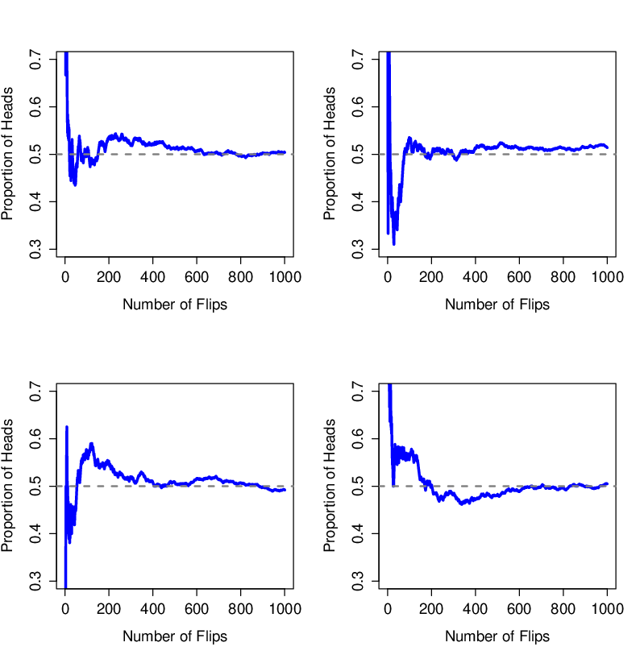

[God] has afforded us only the twilight …of Probability.
– John Locke
Up to this point in the book we’ve discussed some of the key ideas in experimental design, and we’ve talked a little about how you can summarise a data set. To a lot of people this is all there is to statistics: collecting all the numbers, calculating averages, drawing pictures, and putting them all in a report somewhere. Kind of like stamp collecting but with numbers. However, statistics covers much more than that. In fact, descriptive statistics is one of the smallest parts of statistics and one of the least powerful. The bigger and more useful part of statistics is that it provides information that lets you make inferences about data.
Once you start thinking about statistics in these terms, that statistics is there to help us draw inferences from data, you start seeing examples of it everywhere. For instance, here’s a tiny extract from a newspaper article in the Sydney Morning Herald (30 Oct 2010):
“I have a tough job,” the Premier said in response to a poll which found her government is now the most unpopular Labor administration in polling history, with a primary vote of just 23 per cent.
This kind of remark is entirely unremarkable in the papers or in everyday life, but let’s have a think about what it entails. A polling company has conducted a survey, usually a pretty big one because they can afford it. I’m too lazy to track down the original survey so let’s just imagine that they called 1000 New South Wales (NSW) voters at random, and 230 (23%) of those claimed that they intended to vote for the Australian Labor Party (ALP). For the 2010 Federal election the Australian Electoral Commission reported 4,610,795 enrolled voters in NSW, so the opinions of the remaining 4,609,795 voters (about 99.98% of voters) remain unknown to us. Even assuming that no-one lied to the polling company the only thing we can say with 100% confidence is that the true ALP primary vote is somewhere between 230/4610795 (about 0.005%) and 4610025/4610795 (about 99.83%). So, on what basis is it legitimate for the polling company, the newspaper, and the readership to conclude that the ALP primary vote is only about 23%?
The answer to the question is pretty obvious. If I call 1000 people at random, and 230 of them say they intend to vote for the ALP, then it seems very unlikely that these are the only 230 people out of the entire voting public who actually intend to vote ALP. In other words, we assume that the data collected by the polling company is pretty representative of the population at large. But how representative? Would we be surprised to discover that the true ALP primary vote is actually 24%? 29%? 37%? At this point everyday intuition starts to break down a bit. No-one would be surprised by 24%, and everybody would be surprised by 37%, but it’s a bit hard to say whether 29% is plausible. We need some more powerful tools than just looking at the numbers and guessing.
Inferential statistics provides the tools that we need to answer these sorts of questions, and since these kinds of questions lie at the heart of the scientific enterprise, they take up the lions share of every introductory course on statistics and research methods. However, the theory of statistical inference is built on top of probability theory. And it is to probability theory that we must now turn. This discussion of probability theory is basically background detail. There’s not a lot of statistics per se in this chapter, and you don’t need to understand this material in as much depth as the other chapters in this part of the book. Nevertheless, because probability theory does underpin so much of statistics, it’s worth covering some of the basics.
Before we start talking about probability theory, it’s helpful to spend a moment thinking about the relationship between probability and statistics. The two disciplines are closely related but they’re not identical. Probability theory is “the doctrine of chances”. It’s a branch of mathematics that tells you how often different kinds of events will happen. For example, all of these questions are things you can answer using probability theory:
Notice that all of these questions have something in common. In each case the “truth of the world” is known and my question relates to the “what kind of events” will happen. In the first question I know that the coin is fair so there’s a 50% chance that any individual coin flip will come up heads. In the second question I know that the chance of rolling a 6 on a single die is 1 in 6. In the third question I know that the deck is shuffled properly. And in the fourth question I know that the lottery follows specific rules. You get the idea. The critical point is that probabilistic questions start with a known model of the world, and we use that model to do some calculations. The underlying model can be quite simple. For instance, in the coin flipping example we can write down the model like this:
So that’s probability. What about statistics? Statistical questions work the other way around. In statistics we do not know the truth about the world. All we have is the data and it is from the data that we want to learn the truth about the world. Statistical questions tend to look more like these:
This time around the only thing we have are data. What I know is that I saw my friend flip the coin 10 times and it came up heads every time. And what I want to infer is whether or not I should conclude that what I just saw was actually a fair coin being flipped 10 times in a row, or whether I should suspect that my friend is playing a trick on me. The data I have look like this:
and what I’m trying to do is work out which “model of the world” I should put my trust in. If the coin is fair then the model I should adopt is one that says that the probability of heads is 0.5, that is Ppheadsq � 0.5. If the coin is not fair then I should conclude that the probability of heads is not 0.5, which we would write as Ppheadsq � 0.5. In other words, the statistical inference problem is to figure out which of these probability models is right. Clearly, the statistical question isn’t the same as the probability question, but they’re deeply connected to one another. Because of this, a good introduction to statistical theory will start with a discussion of what probability is and how it works.
Let’s start with the first of these questions. What is “probability”? It might seem surprising to you but while statisticians and mathematicians (mostly) agree on what the rules of probability are, there’s much less of a consensus on what the word really means. It seems weird because we’re all very comfortable using words like “chance”, “likely”, “possible” and “probable”, and it doesn’t seem like it should be a very difficult question to answer. But if you’ve ever had that experience in real life you might walk away from the conversation feeling like you didn’t quite get it right, and that (like many everyday concepts) it turns out that you don’t really know what it’s all about.
So I’ll have a go at it. Let’s suppose I want to bet on a soccer game between two teams of robots, Arduino Arsenal and C Milan. After thinking about it, I decide that there is an 80% probability of Arduino Arsenal winning. What do I mean by that? Here are three possibilities:
Each of these seems sensible. However, they’re not identical and not every statistician would endorse all of them. The reason is that there are different statistical ideologies (yes, really!) and depending on which one you subscribe to, you might say that some of those statements are meaningless or irrelevant. In this section I give a brief introduction the two main approaches that exist in the literature. These are by no means the only approaches, but they’re the two big ones.
The first of the two major approaches to probability, and the more dominant one in statistics, is referred to as the frequentist view and it defines probability as a long-run frequency. Suppose we were to try flipping a fair coin over and over again. By definition this is a coin that has PpHq � 0.5. What might we observe? One possibility is that the first 20 flips might look like this:
In this case 11 of these 20 coin flips (55%) came up heads. Now suppose that I’d been keeping a running tally of the number of heads (which I’ll call NH) that I’ve seen, across the first N flips, and calculate the proportion of heads NH{N every time. Here’s what I’d get (I did literally flip coins to produce this!):
|
||||||||||||||||||||||||||||||||||||||||||||||||||||||||||||||||||||||
|
Notice that at the start of the sequence the proportion of heads fluctuates wildly, starting at .00 and rising as high as .80. Later on, one gets the impression that it dampens out a bit, with more and more of the values actually being pretty close to the “right” answer of .50. This is the frequentist definition of probability in a nutshell. Flip a fair coin over and over again, and as N grows large (approaches infinity, denoted N � 8) the proportion of heads will converge to 50%. There are some subtle technicalities that the mathematicians care about, but qualitatively speaking that’s how the frequentists define probability. Unfortunately, I don’t have an infinite number of coins or the infinite patience required to flip a coin an infinite number of times. However, I do have a computer and computers excel at mindless repetitive tasks. So I asked my computer to simulate flipping a coin 1000 times and then drew a picture of what happens to the proportion NH{N as N increases. Actually, I did it four times just to make sure it wasn’t a fluke. The results are shown in Figure 7.1. As you can see, the proportion of observed heads eventually stops fluctuating and settles down. When it does, the number at which it finally settles is the true probability of heads.

The frequentist definition of probability has some desirable characteristics. First, it is objective. The probability of an event is necessarily grounded in the world. The only way that probability statements can make sense is if they refer to (a sequence of) events that occur in the physical universe.1 Secondly, it is unambiguous. Any two people watching the same sequence of events unfold, trying to calculate the probability of an event, must inevitably come up with the same answer.
However, it also has undesirable characteristics. First, infinite sequences don’t exist in the physical world. Suppose you picked up a coin from your pocket and started to flip it. Every time it lands it impacts on the ground. Each impact wears the coin down a bit. Eventually the coin will be destroyed. So, one might ask whether it really makes sense to pretend that an “infinite” sequence of coin flips is even a meaningful concept, or an objective one. We can’t say that an “infinite sequence” of events is a real thing in the physical universe, because the physical universe doesn’t allow infinite anything. More seriously, the frequentist definition has a narrow scope. There are lots of things out there that human beings are happy to assign probability to in everyday language, but cannot (even in theory) be mapped onto a hypothetical sequence of events. For instance, if a meteorologist comes on TV and says “the probability of rain in Adelaide on 2 November 2048 is 60%” we humans are happy to accept this. But it’s not clear how to define this in frequentist terms. There’s only one city of Adelaide, and only one 2 November 2048. There’s no infinite sequence of events here, just a one-off thing. Frequentist probability genuinely forbids us from making probability statements about a single event. From the frequentist perspective it will either rain tomorrow or it will not. There is no “probability” that attaches to a single non-repeatable event. Now, it should be said that there are some very clever tricks that frequentists can use to get around this. One possibility is that what the meteorologist means is something like “There is a category of days for which I predict a 60% chance of rain, and if we look only across those days for which I make this prediction, then on 60% of those days it will actually rain”. It’s very weird and counterintuitive to think of it this way, but you do see frequentists do this sometimes. And it will come up later in this book (see Section 8.5).
The Bayesian view of probability is often called the subjectivist view, and although it has been a minority view among statisticians it has been steadily gaining traction for the last several decades. There are many flavours of Bayesianism, making it hard to say exactly what “the” Bayesian view is. The most common way of thinking about subjective probability is to define the probability of an event as the degree of belief that an intelligent and rational agent assigns to that truth of that event. From that perspective, probabilities don’t exist in the world but rather in the thoughts and assumptions of people and other intelligent beings.
However, in order for this approach to work we need some way of operationalising “degree of belief”. One way that you can do this is to formalise it in terms of “rational gambling”, though there are many other ways. Suppose that I believe that there’s a 60% probability of rain tomorrow. If someone offers me a bet that if it rains tomorrow then I win $5, but if it doesn’t rain I lose $5. Clearly, from my perspective, this is a pretty good bet. On the other hand, if I think that the probability of rain is only 40% then it’s a bad bet to take. So we can operationalise the notion of a “subjective probability” in terms of what bets I’m willing to accept.
What are the advantages and disadvantages to the Bayesian approach? The main advantage is that it allows you to assign probabilities to any event you want to. You don’t need to be limited to those events that are repeatable. The main disadvantage (to many people) is that we can’t be purely objective. Specifying a probability requires us to specify an entity that has the relevant degree of belief. This entity might be a human, an alien, a robot, or even a statistician. But there has to be an intelligent agent out there that believes in things. To many people this is uncomfortable, it seems to make probability arbitrary. Whilst the Bayesian approach requires that the agent in question be rational (i.e., obey the rules of probability), it does allow everyone to have their own beliefs. I can believe the coin is fair and you don’t have to, even though we’re both rational. The frequentist view doesn’t allow any two observers to attribute different probabilities to the same event. When that happens then at least one of them must be wrong. The Bayesian view does not prevent this from occurring. Two observers with different background knowledge can legitimately hold different beliefs about the same event. In short, where the frequentist view is sometimes considered to be too narrow (forbids lots of things that that we want to assign probabilities to), the Bayesian view is sometimes thought to be too broad (allows too many differences between observers).
Now that you’ve seen each of these two views independently it’s useful to make sure you can compare the two. Go back to the hypothetical robot soccer game at the start of the section. What do you think a frequentist and a Bayesian would say about these three statements? Which statement would a frequentist say is the correct definition of probability? Which one would a Bayesian opt for? Would some of these statements be meaningless to a frequentist or a Bayesian? If you’ve understood the two perspectives you should have some sense of how to answer those questions.
Okay, assuming you understand the difference then you might be wondering which of them is right? Honestly, I don’t know that there is a right answer. As far as I can tell there’s nothing mathematically incorrect about the way frequentists think about sequences of events, and there’s nothing mathematically incorrect about the way that Bayesians define the beliefs of a rational agent. In fact, when you dig down into the details Bayesians and frequentists actually agree about a lot of things. Many frequentist methods lead to decisions that Bayesians agree a rational agent would make. Many Bayesian methods have very good frequentist properties.
For the most part, I’m a pragmatist so I’ll use any statistical method that I trust. As it turns out, that makes me prefer Bayesian methods for reasons I’ll explain towards the end of the book. But I’m not fundamentally opposed to frequentist methods. Not everyone is quite so relaxed. For instance, consider Sir Ronald Fisher, one of the towering figures of 20th century statistics and a vehement opponent to all things Bayesian, whose paper on the mathematical foundations of statistics referred to Bayesian probability as “an impenetrable jungle [that] arrests progress towards precision of statistical concepts” (Fisher 1922b, p. 311). Or the psychologist Paul Meehl, who suggests that relying on frequentist methods could turn you into “a potent but sterile intellectual rake who leaves in his merry path a long train of ravished maidens but no viable scientific offspring” (Meehl 1967, p. 114). The history of statistics, as you might gather, is not devoid of entertainment.
In any case, whilst I personally prefer the Bayesian view, the majority of statistical analyses are based on the frequentist approach. My reasoning is pragmatic. The goal of this book is to cover roughly the same territory as a typical undergraduate stats class in psychology, and if you want to understand the statistical tools used by most psychologists you’ll need a good grasp of frequentist methods. I promise you that this isn’t wasted effort. Even if you end up wanting to switch to the Bayesian perspective, you really should read through at least one book on the “orthodox” frequentist view. Besides, I won’t completely ignore the Bayesian perspective. Every now and then I’ll add some commentary from a Bayesian point of view, and I’ll revisit the topic in more depth in Chapter 16.
Ideological arguments between Bayesians and frequentists notwithstanding, it turns out that people mostly agree on the rules that probabilities should obey. There are lots of different ways of arriving at these rules. The most commonly used approach is based on the work of Andrey Kolmogorov, one of the great Soviet mathematicians of the 20th century. I won’t go into a lot of detail, but I’ll try to give you a bit of a sense of how it works. And in order to do so I’m going to have to talk about my trousers.
One of the disturbing truths about my life is that I only own 5 pairs of trousers. Three pairs of jeans, the bottom half of a suit, and a pair of tracksuit pants. Even sadder, I’ve given them names: I call them X1, X2, X3, X4 and X5. I really have, that’s why they call me Mister Imaginative. Now, on any given day, I pick out exactly one of pair of trousers to wear. Not even I’m so stupid as to try to wear two pairs of trousers, and thanks to years of training I never go outside without wearing trousers anymore. If I were to describe this situation using the language of probability theory, I would refer to each pair of trousers (i.e., each X) as an elementary event. The key characteristic of elementary events is that every time we make an observation (e.g., every time I put on a pair of trousers) then the outcome will be one and only one of these events. Like I said, these days I always wear exactly one pair of trousers so my trousers satisfy this constraint. Similarly, the set of all possible events is called a sample space. Granted, some people would call it a “wardrobe”, but that’s because they’re refusing to think about my trousers in probabilistic terms. Sad.
Okay, now that we have a sample space (a wardrobe), which is built from lots of possible elementary events (trousers), what we want to do is assign a probability of one of these elementary events. For an event X, the probability of that event PpXq is a number that lies between 0 and 1. The bigger the value of PpXq, the more likely the event is to occur. So, for example, if PpXq � 0 it means the event X is impossible (i.e., I never wear those trousers). On the other hand, if PpXq � 1 it means that event X is certain to occur (i.e., I always wear those trousers). For probability values in the middle it means that I sometimes wear those trousers. For instance, if PpXq � 0.5 it means that I wear those trousers half of the time.
At this point, we’re almost done. The last thing we need to recognise is that “something always happens”. Every time I put on trousers, I really do end up wearing trousers (crazy, right?). What this somewhat trite statement means, in probabilistic terms, is that the probabilities of the elementary events need to add up to 1. This is known as the law of total probability, not that any of us really care. More importantly, if these requirements are satisfied then what we have is a probability distribution. For example, this is an example of a probability distribution:
| Which trousers? | Label | Probability |
| Blue jeans | X1 | PpX1q � .5 |
| Grey jeans | X2 | PpX2q � .3 |
| Black jeans | X3 | PpX3q � .1 |
| Black suit | X4 | PpX4q � 0 |
| Blue tracksuit | X5 | PpX5q � .1 |
Each of the events has a probability that lies between 0 and 1, and if we add up the probability of all events they sum to 1. Awesome. We can even draw a nice bar graph (see Section 5.3) to visualise this distribution, as shown in Figure 7.2. And, at this point, we’ve all achieved something. You’ve learned what a probability distribution is, and I’ve finally managed to find a way to create a graph that focuses entirely on my trousers. Everyone wins!
The only other thing that I need to point out is that probability theory allows you to talk about non elementary events as well as elementary ones. The easiest way to illustrate the concept is with an example. In the trousers example it’s perfectly legitimate to refer to the probability that I wear jeans. In this scenario, the “Dan wears jeans” event is said to have happened as long as the elementary event that actually did occur is one of the appropriate ones. In this case “blue jeans”, “black jeans” or “grey jeans”. In mathematical terms we defined the “jeans” event E to correspond to the set of elementary events pX1,X2,X3q. If any of these elementary events occurs then E is also said to have occurred. Having decided to write down the definition of the E this way, it’s pretty straightforward to state what the probability PpEq is: we just add everything up. In this particular case
At this point you might be thinking that this is all terribly obvious and simple and you’d be right. All we’ve really done is wrap some basic mathematics around a few common sense intuitions. However, from these simple beginnings it’s possible to construct some extremely powerful mathematical tools. I’m definitely not going to go into the details in this book, but what I will do is list, in Table 7.1, some of the other rules that probabilities satisfy. These rules can be derived from the simple assumptions that I’ve outlined above, but since we don’t actually use these rules for anything in this book I won’t do so here.
| English | Notation | Formula | |
| not A | Pp Aq | � | 1 � PpAq |
| A or B | PpA Y Bq | � | PpAq � PpBq � PpA X Bq |
| A and B | PpA X Bq | � | PpA|BqPpBq |
As you might imagine, probability distributions vary enormously and there’s an enormous range of distributions out there. However, they aren’t all equally important. In fact, the vast majority of the content in this book relies on one of five distributions: the binomial distribution, the normal distribution, the t distribution, the χ2 (“chi-square”) distribution and the F distribution. Given this, what I’ll do over the next few sections is provide a brief introduction to all five of these, paying special attention to the binomial and the normal. I’ll start with the binomial distribution since it’s the simplest of the five.
The theory of probability originated in the attempt to describe how games of chance work, so it seems fitting that our discussion of the binomial distribution should involve a discussion of rolling dice and flipping coins. Let’s imagine a simple “experiment”. In my hot little hand I’m holding 20 identical six-sided dice. On one face of each die there’s a picture of a skull, the other five faces are all blank. If I proceed to roll all 20 dice, what’s the probability that I’ll get exactly 4 skulls? Assuming that the dice are fair, we know that the chance of any one die coming up skulls is 1 in 6. To say this another way, the skull probability for a single die is approximately .167. This is enough information to answer our question, so let’s have a look at how it’s done.
| Binomial | Normal | |
| PpX | 𝜃,Nq � 𝜃Xp1 � 𝜃qN�X | ppX | μ,σq � exp | |
As usual, we’ll want to introduce some names and some notation. We’ll let N denote the number of dice rolls in our experiment, which is often referred to as the size parameter of our binomial distribution. We’ll also use 𝜃 to refer to the the probability that a single die comes up skulls, a quantity that is usually called the success probability of the binomial.2 Finally, we’ll use X to refer to the results of our experiment, namely the number of skulls I get when I roll the dice. Since the actual value of X is due to chance we refer to it as a random variable. In any case, now that we have all this terminology and notation we can use it to state the problem a little more precisely. The quantity that we want to calculate is the probability that X � 4 given that we know that 𝜃 � .167 and N � 20. The general “form” of the thing I’m interested in calculating could be written as
To that end, Figure 7.3 plots the binomial probabilities for all possible values of X for our dice rolling experiment, from X � 0 (no skulls) all the way up to X � 20 (all skulls). Note that this is basically a bar chart, and is no different to the “trousers probability” plot I drew in Figure 7.2. On the horizontal axis we have all the possible events, and on the vertical axis we can read off the probability of each of those events. So, the probability of rolling 4 skulls out of 20 is about 0.20 (the actual answer is 0.2022036, as we’ll see in a moment). In other words, you’d expect that to happen about 20% of the times you repeated this experiment.
To give you a feel for how the binomial distribution changes when we alter the values of 𝜃 and N, let’s suppose that instead of rolling dice I’m actually flipping coins. This time around, my experiment involves flipping a fair coin repeatedly and the outcome that I’m interested in is the number of heads that I observe. In this scenario, the success probability is now 𝜃 � 1{2. Suppose I were to flip the coin N � 20 times. In this example, I’ve changed the success probability but kept the size of the experiment the same. What does this do to our binomial distribution? Well, as Figure 7.4a shows, the main effect of this is to shift the whole distribution, as you’d expect. Okay, what if we flipped a coin N � 100 times? Well, in that case we get Figure 7.4b. The distribution stays roughly in the middle but there’s a bit more variability in the possible outcomes.
| (a) | |
| (b) |
While the binomial distribution is conceptually the simplest distribution to understand, it’s not the most important one. That particular honour goes to the normal distribution, also referred to as “the bell curve” or a “Gaussian distribution”. A normal distribution is described using two parameters: the mean of the distribution μ and the standard deviation of the distribution σ.
The notation that we sometimes use to say that a variable X is normally distributed is as follows:
Of course, that’s just notation. It doesn’t tell us anything interesting about the normal distribution itself. As was the case with the binomial distribution, I have included the formula for the normal distribution in this book, because I think it’s important enough that everyone who learns statistics should at least look at it, but since this is an introductory text I don’t want to focus on it, so I’ve tucked it away in Table 7.2.
Instead of focusing on the maths, let’s try to get a sense for what it means for a variable to be normally distributed. To that end, have a look at Figure 7.5 which plots a normal distribution with mean μ � 0 and standard deviation σ � 1. You can see where the name “bell curve” comes from; it looks a bit like a bell. Notice that, unlike the plots that I drew to illustrate the binomial distribution, the picture of the normal distribution in Figure 7.5 shows a smooth curve instead of “histogram-like” bars. This isn’t an arbitrary choice, the normal distribution is continuous whereas the binomial is discrete. For instance, in the die rolling example from the last section it was possible to get 3 skulls or 4 skulls, but impossible to get 3.9 skulls. The figures that I drew in the previous section reflected this fact. In Figure 7.3, for instance, there’s a bar located at X � 3 and another one at X � 4 but there’s nothing in between. Continuous quantities don’t have this constraint. For instance, suppose we’re talking about the weather. The temperature on a pleasant Spring day could be 23 degrees, 24 degrees, 23.9 degrees, or anything in between since temperature is a continuous variable. And so a normal distribution might be quite appropriate for describing Spring temperatures.3
With this in mind, let’s see if we can’t get an intuition for how the normal distribution works. First, let’s have a look at what happens when we play around with the parameters of the distribution. To that end, Figure 7.6 plots normal distributions that have different means but have the same standard deviation. As you might expect, all of these distributions have the same “width”. The only difference between them is that they’ve been shifted to the left or to the right. In every other respect they’re identical. In contrast, if we increase the standard deviation while keeping the mean constant, the peak of the distribution stays in the same place but the distribution gets wider, as you can see in Figure 7.7. Notice, though, that when we widen the distribution the height of the peak shrinks. This has to happen, in the same way that the heights of the bars that we used to draw a discrete binomial distribution have to sum to 1, the total area under the curve for the normal distribution must equal 1. Before moving on, I want to point out one important characteristic of the normal distribution. Irrespective of what the actual mean and standard deviation are, 68.3% of the area falls within 1 standard deviation of the mean. Similarly, 95.4% of the distribution falls within 2 standard deviations of the mean, and 99.7% of the distribution is within 3 standard deviations. This idea is illustrated in Figure 7.8.
| (a) | (b) |
| (a) | (b) |
There’s something I’ve been trying to hide throughout my discussion of the normal distribution, something that some introductory textbooks omit completely. They might be right to do so. This “thing” that I’m hiding is weird and counter-intuitive even by the admittedly distorted standards that apply in statistics. Fortunately, it’s not something that you need to understand at a deep level in order to do basic statistics. Rather, it’s something that starts to become important later on when you move beyond the basics. So, if it doesn’t make complete sense, don’t worry too much, but try to make sure that you follow the gist of it.
Throughout my discussion of the normal distribution there’s been one or two things that don’t quite make sense. Perhaps you noticed that the y-axis in these figures is labelled “Probability Density” rather than density. Maybe you noticed that I used ppXq instead of PpXq when giving the formula for the normal distribution.
As it turns out, what is presented here isn’t actually a probability, it’s something else. To understand what that something is you have to spend a little time thinking about what it really means to say that X is a continuous variable. Let’s say we’re talking about the temperature outside. The thermometer tells me it’s 23 degrees, but I know that’s not really true. It’s not exactly 23 degrees. Maybe it’s 23.1 degrees, I think to myself. But I know that that’s not really true either because it might actually be 23.09 degrees. But I know that... well, you get the idea. The tricky thing with genuinely continuous quantities is that you never really know exactly what they are.
Now think about what this implies when we talk about probabilities. Suppose that tomorrow’s maximum temperature is sampled from a normal distribution with mean 23 and standard deviation 1. What’s the probability that the temperature will be exactly 23 degrees? The answer is “zero”, or possibly “a number so close to zero that it might as well be zero”. Why is this? It’s like trying to throw a dart at an infinitely small dart board. No matter how good your aim, you’ll never hit it. In real life you’ll never get a value of exactly 23. It’ll always be something like 23.1 or 22.99998 or suchlike. In other words, it’s completely meaningless to talk about the probability that the temperature is exactly 23 degrees. However, in everyday language if I told you that it was 23 degrees outside and it turned out to be 22.9998 degrees you probably wouldn’t call me a liar. Because in everyday language “23 degrees” usually means something like “somewhere between 22.5 and 23.5 degrees”. And while it doesn’t feel very meaningful to ask about the probability that the temperature is exactly 23 degrees, it does seem sensible to ask about the probability that the temperature lies between 22.5 and 23.5, or between 20 and 30, or any other range of temperatures.
The point of this discussion is to make clear that when we’re talking about continuous distributions it’s not meaningful to talk about the probability of a specific value. However, what we can talk about is the probability that the value lies within a particular range of values. To find out the probability associated with a particular range what you need to do is calculate the “area under the curve”. We’ve seen this concept already, in Figure 7.8 the shaded areas shown depict genuine probabilities (e.g., in Figure 7.8a it shows the probability of observing a value that falls within 1 standard deviation of the mean).
Okay, so that explains part of the story. I’ve explained a little bit about how continuous probability distributions should be interpreted (i.e., area under the curve is the key thing). But what does the formula for ppxq that I described earlier actually mean? Obviously, ppxq doesn’t describe a probability, but what is it? The name for this quantity ppxq is a probability density, and in terms of the plots we’ve been drawing it corresponds to the height of the curve. The densities themselves aren’t meaningful in and of themselves, but they’re “rigged” to ensure that the area under the curve is always interpretable as genuine probabilities. To be honest, that’s about as much as you really need to know for now.4
The normal distribution is the distribution that statistics makes most use of (for reasons to be discussed shortly), and the binomial distribution is a very useful one for lots of purposes. But the world of statistics is filled with probability distributions, some of which we’ll run into in passing. In particular, the three that will appear in this book are the t distribution, the χ2 distribution and the F distribution. I won’t give formulas for any of these, or talk about them in too much detail, but I will show you some pictures.
Okay, time to wrap this section up. We’ve seen three new distributions: χ2, t and F. They’re all continuous distributions, and they’re all closely related to the normal distribution. The main thing for our purposes is that you grasp the basic idea that these distributions are all deeply related to one another, and to the normal distribution. Later on in this book we’re going to run into data that are normally distributed, or at least assumed to be normally distributed. What I want you to understand right now is that, if you make the assumption that your data are normally distributed, you shouldn’t be surprised to see χ2, t and F distributions popping up all over the place when you start trying to do your data analysis.
In this chapter we’ve talked about probability. We’ve talked about what probability means and why statisticians can’t agree on what it means. We talked about the rules that probabilities have to obey. And we introduced the idea of a probability distribution and spent a good chunk of the chapter talking about some of the more important probability distributions that statisticians work with. The section by section breakdown looks like this:
As you’d expect, my coverage is by no means exhaustive. Probability theory is a large branch of mathematics in its own right, entirely separate from its application to statistics and data analysis. As such, there are thousands of books written on the subject and universities generally offer multiple classes devoted entirely to probability theory. Even the “simpler” task of documenting standard probability distributions is a big topic. I’ve described five standard probability distributions in this chapter, but sitting on my bookshelf I have a 45-chapter book called “Statistical Distributions” (Evans, Hastings, and Peacock 2011) that lists a lot more than that. Fortunately for you, very little of this is necessary. You’re unlikely to need to know dozens of statistical distributions when you go out and do real world data analysis, and you definitely won’t need them for this book, but it never hurts to know that there’s other possibilities out there.
Picking up on that last point, there’s a sense in which this whole chapter is something of a digression. Many undergraduate psychology classes on statistics skim over this content very quickly (I know mine did), and even the more advanced classes will often “forget” to revisit the basic foundations of the field. Most academic psychologists would not know the difference between probability and density, and until recently very few would have been aware of the difference between Bayesian and frequentist probability. However, I think it’s important to understand these things before moving onto the applications. For example, there are a lot of rules about what you’re “allowed” to say when doing statistical inference and many of these can seem arbitrary and weird. However, they start to make sense if you understand that there is this Bayesian/frequentist distinction. Similarly, in Chapter 11 we’re going to talk about something called the t-test, and if you really want to have a grasp of the mechanics of the t-test it really helps to have a sense of what a t-distribution actually looks like. You get the idea, I hope.